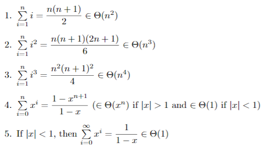
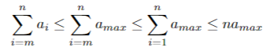
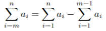

Cse 2321 Notes (to midterm 2)
6. Summations
Noteworthy summations

6.1 Bounding summations
bound from above

bound from below
6.2 Splitting summations

7. Analyzing loops with summations
Summing up the cost of the inner loop